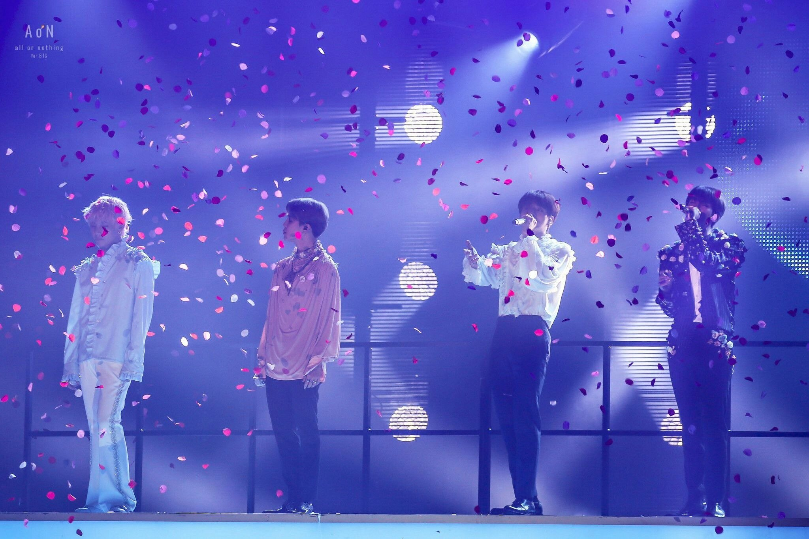

Recently international KPOP sensation BTS produced a new slow ballad — The Truth Untold (feat. Steve Aoki)- of the old Italian story from the viewpoint of the guy in the story. The song is featured as track three on the band’s album Love Yourself: Tear.
The song proven to be a ballad featuring the group’s vocalists, touches various emotional components revealing the untold sincerity of the man . It taps into the sorrow in a vulnerable approach. “The Truth Untold” is the second collaboration between Aoki and the Korean boy band. It follows his remix of BTS’ “Mic Drop.”
"A flower bloomed in a lonely garden,
that looks like you.
I wanted to give it to you,
taking off that stupid mask."
